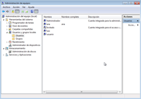
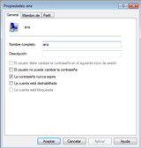

- Gestión de cuentas de usuarios locales y grupo mediante Herramientas administrativas - Administración de equipos
La tercera opción que tenemos para gestionar cuentas de usuario, es la opción más interesante de todas las que nos ofrece Windows 7. Es la consola de usuarios locales y grupos. Podemos llegar a dicha consola de varias formas.
Podemos ejecutar desde Inicio - Ejecutar y escribir
LUSRMGR.MSC.O desde Panel de Control - Sistema y seguridad - Herramientas Administrativas - Administración de equipos y en ella escogemos la carpeta de usuarios locales y grupos.
{kind=link}
Lleguemos desde donde lleguemos, veremos que tenemos dos carpetas, una para los usuarios y otra para los
grupos. Podemos crear usuarios nuevos accediendo a las propiedades de la carpeta usuarios (botón derecho sobre ella) y seleccionando la opción de Usuario Nuevo. Podemos modificar un usuario accediendo a sus propiedades. Del mismo modo podemos crear nuevos grupos y modificar los ya existentes. Podemos tanto asignar a un usuario varios grupos, como asignar a un grupo varios usuarios.
Si compruebas el nombre de esta última consola, verás que aparece la palabra local en el mismo. Esto es así por que se distinguen dos ámbitos al hablar de usuarios: Los usuarios locales y los usuarios de dominio. Mientras no tengamos instalado un dominio (para lo cual necesitaremos algún servidor Windows de la familia Server) siempre estaremos trabajando con cuentas locales.
Si accedemos a las propiedades de un usuario, veremos que tenemos tres pestañas con las que trabajar:
1. General: Podemos indicar el nombre completo de la cuenta, una descripción, e indicar algunas opciones de la cuenta, como:
{kind=link}
- El usuario debe cambiar la contraseña en el siguiente inicio de sesión. Cuando el usuario inicie sesión la próxima vez se verá obligado a cambiar su contraseña.
- El usuario no puede cambiar la contraseña. Prohibimos que el usuario pueda cambiar su contraseña.
- La contraseña nunca caduca. Ya veremos como en Windows 7 las contraseñas se consideran material fungible, es decir, que tras un cierto tiempo de uso el sistema obligará a cambiar dichas contraseñas. Mediante esta opción indicamos que la contraseña podrá usarse sin que caduque nunca.
- Cuenta deshabilitada: No borra la cuenta, pero impide que sea usada. Es el estado por defecto de la cuenta Invitado.
- La cuenta está bloqueada: Por determinados mecanismos de seguridad se puede llegar a bloquear una cuenta, que implicará que dicha cuenta estará deshabilitada. Desde esta opción podemos volver a desbloquearla, simplemente desmarcando la casilla.
{kind=link}
2. Además de la pestaña General, tenemos la referida a Miembro de, desde esta pestaña podemos introducir al usuario en grupos. Los grupos se usan para dar permisos y derechos a los usuarios más fácilmente, sin tener que ir usuario por usuario. Así por ejemplo, si introducimos a un usuario como miembro del grupo Administradores, le estaremos dando todos los permisos del grupo Administradores.
En la pestaña Miembro de, veremos todos los grupos a los que el usuario pertenece actualmente. Si le damos al botón agregar podremos escribir directamente el nombre de un grupo donde agregarlo. Si queremos escoger dicho grupo de una lista de los grupos posibles, hay que escoger la opción Avanzada y luego Buscar ahora, que nos mostrará una lista de todos los grupos del sistema. Basta con seleccionar el que queramos (o los que queramos) y pulsar aceptar.
3. La última pestaña es de Perfil. Ésta nos permite indicar la ruta del perfil, los archivos de inicio de sesión y las carpetas personales del usuario. Como en un apunte posterior veremos el tema de perfiles, de momento lo dejamos pendiente.